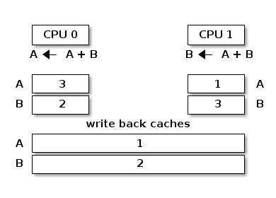
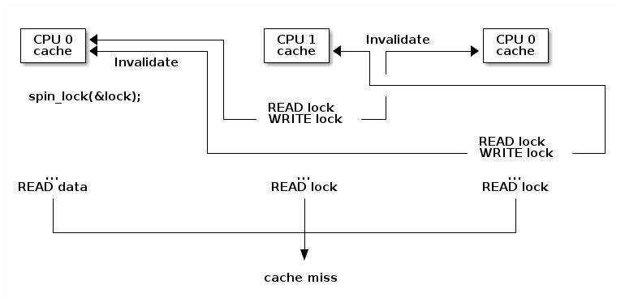
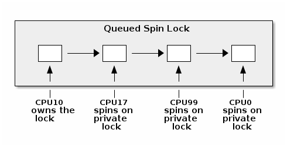
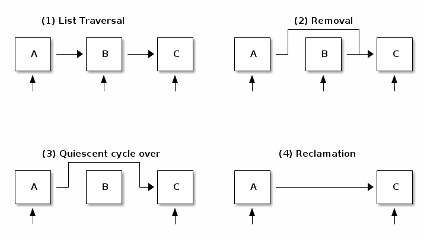

对称多处理
- 内核并发
- 原子操作
- 自旋锁
- 缓存抖动
- 优化自旋锁
- 进程和中断上下文同步
- 互斥锁
- 每个 CPU 的数据
- 内存排序和屏障
- 读-拷贝 更新（RCU）
竟态条件
- 至少有两个执行上下文同时运行：
- 真正并行运行（例如，在不同处理器上运行的两个系统调用）
- 其中一个上下文可以任意抢占另一个上下文（例如，中断抢占了系统调用）
- 执行上下文对共享内存进行读写访问
竟态条件：资源计数器释放
void release_resource()
{
counter--;
if (!counter)
free_resource();
}
竟态条件场景

避免竟态条件
Linux 内核并发源
- 单核系统, 非抢占内核：当前进程可以被中断抢占
- 单核系统, 抢占内核：上述情况 + 当前进程可以被其他进程抢占
- 多核系统：上述情况 + 当前进程可以与在另一个处理器上运行的另一个进程或中断并行运行
原子操作
- 基于整数：
- 基于位操作：
使用 atomic_dec_and_test() 来实现资源计数器的释放
void release_resource()
{
if (atomic_dec_and_test(&counter))
free_resource();
}
在 SMP 系统上原子操作可能不再是原子的

修复 SMP 系统上的原子操作（x86）

与中断同步（x86）
#define local_irq_disable() \
asm volatile („cli” : : : „memory”)
#define local_irq_enable() \
asm volatile („sti” : : : „memory”)
#define local_irq_save(flags) \
asm volatile ("pushf ; pop %0" :"=g" (flags)
: /* no input */: "memory") \
asm volatile("cli": : :"memory")
#define local_irq_restore(flags) \
asm volatile ("push %0 ; popf"
: /* no output */
: "g" (flags) :"memory", "cc");
自旋锁实现示例（x86）
spin_lock:
lock bts [my_lock], 0
jc spin_lock
/* 临界区 */
spin_unlock:
mov [my_lock], 0
**bts dts, src**——位测试并设置；它将来自 dts 内存地址的第 src 位复制到进位标志位（carry flag），然后将其设置为 1：
CF <- dts[src]
dts[src] <- 1
锁争用
- 当至少有一个核心在自旋尝试进入临界区时，就会发生锁争用
- 锁争用随着临界区大小、在临界区中花费的时间以及系统中处理器核心数量的增加而增加
高速缓存抖动
当多个处理器核心试图读写同一内存时，会发生高速缓存抖动，导致过多的高速缓存未命中。
由于自旋锁在锁争用期间不断访问内存，高速缓存抖动很常见，这是由高速缓存一致性的实现方式造成的。
同步的缓存和内存

缺乏同步的缓存和内存

缓存一致性协议
- 总线嗅探（Bus snooping）：缓存监视内存总线事务，并采取行动以保持一致性。
- 目录（Directory）协议：有一个单独的实体（目录）来维护缓存的状态；缓存与目录交互以保持一致性。
缓存嗅探协议较为简单，但当核心数超过 32-64 时性能表现较差。
目录协议的缓存一致性协议能够更好地扩展（可达数千个核心），非一致性存储访问（NUMA）系统中通常使用的就是目录协议。
MESI 缓存一致性协议
- 缓存策略：写回（write back）
- 缓存行状态
- 已修改：由单个核心拥有且为脏数据
- 独占：由单个核心拥有且为干净数据
- 共享：由多个核心共享且为干净数据
- 已失效：该行未被缓存
MESI 状态转换
- 已失效 -> 独占：读取请求，所有其他核心中的该行处于已失效状态；从内存加载该行
- 已失效 -> 共享 ：读取请求，至少一个核心中的该行处于共享或独占状态；从兄弟缓存加载该行
- 已失效/共享/独占 -> 已修改：写入请求; 所有其他 核心 将自身的该行状态设为已失效
- 已修改 -> 已失效 ：来自其他核心的写入请求；将该行刷新到内存
自旋锁争用导致的缓存抖动

优化的自旋锁（KeAcquireSpinLock）
spin_lock:
rep ; nop
test lock_addr, 1
jnz spin_lock
lock bts lock_addr
jc spin_lock
- 我们首先只测试（读）锁，并且使用非原子指令来操作，以避免写入进而导致在自旋时产生失效操作
- 仅当锁 可能 是空闲的时候，我们才尝试获取它
自旋锁队列

进程和中断处理程序同步死锁
- 在进程上下文中，我们获取自旋锁
- 发生中断，并在同一 CPU 核心上调度
- 中断处理程序运行并尝试获取自旋锁
- 当前 CPU 将发生死锁
用于 SMP 的中断同步
- 在进程上下文中：禁用中断并获取自旋锁；这将保护免受中断或其他 CPU 核心竟态条件的影响（
spin_lock_irqsave()和spin_lock_restore()结合了这两个操作） - 在中断上下文中：获取自旋锁；这将保护免受运行在不同处理器上的其他中断处理程序或进程上下文的竟态条件的影响
SMP 的软中断同步
- 在进程上下文中使用
spin_lock_bh`（将 :c:func:`local_bh_disable()和spin_lock()结合起来）和spin_unlock_bh`（将 :c:func:`spin_unlock()和local_bh_enable()结合起来） - 在软中断上下文中使用：
spin_lock()和spin_unlock`（如果与中断处理程序共享数据，则使用 :c:func:`spin_lock_irqsave()和spin_lock_irqrestore()）
抢占
抢占是可配置的：如果激活，它提供更低的延迟和响应时间，而如果停用，它提供更好的吞吐量。
抢占被自旋锁和互斥锁禁用，但也可以手动禁用（通过核心内核代码）。
抢占和软中断屏蔽
#define PREEMPT_BITS 8
#define SOFTIRQ_BITS 8
#define HARDIRQ_BITS 4
#define NMI_BITS 1
#define preempt_disable() preempt_count_inc()
#define local_bh_disable() add_preempt_count(SOFTIRQ_OFFSET)
#define local_bh_enable() sub_preempt_count(SOFTIRQ_OFFSET)
#define irq_count() (preempt_count() & (HARDIRQ_MASK | SOFTIRQ_MASK))
#define in_interrupt() irq_count()
asmlinkage void do_softirq(void)
{
if (in_interrupt()) return;
...
互斥锁
- 如果上下文切换开销低于自旋时间平均值，则系统吞吐量比自旋锁好，因为它们不会"浪费" CPU 周期
- 不能在中断上下文中使用
- 比起自旋锁具有更高的延迟
mutex_lock() 捷径
void __sched mutex_lock(struct mutex *lock)
{
might_sleep();
if (!__mutex_trylock_fast(lock))
__mutex_lock_slowpath(lock);
}
static __always_inline bool __mutex_trylock_fast(struct mutex *lock)
{
unsigned long curr = (unsigned long)current;
if (!atomic_long_cmpxchg_acquire(&lock->owner, 0UL, curr))
return true;
return false;
}
mutex_lock() 慢路径
...
spin_lock(&lock->wait_lock);
...
/* 添加等待的任务到等待队列尾部 (FIFO): */
list_add_tail(&waiter.list, &lock->wait_list);
...
waiter.task = current;
...
for (;;) {
if (__mutex_trylock(lock))
goto acquired;
...
spin_unlock(&lock->wait_lock);
...
set_current_state(state);
spin_lock(&lock->wait_lock);
}
spin_lock(&lock->wait_lock);
acquired:
__set_current_state(TASK_RUNNING);
mutex_remove_waiter(lock, &waiter, current);
spin_lock(&lock->wait_lock);
...
mutex_unlock() 快速路径
void __sched mutex_unlock(struct mutex *lock)
{
if (__mutex_unlock_fast(lock))
return;
__mutex_unlock_slowpath(lock, _RET_IP_);
}
static __always_inline bool __mutex_unlock_fast(struct mutex *lock)
{
unsigned long curr = (unsigned long)current;
if (atomic_long_cmpxchg_release(&lock->owner, curr, 0UL) == curr)
return true;
return false;
}
void __mutex_lock_slowpath(struct mutex *lock)
{
...
if (__mutex_waiter_is_first(lock, &waiter))
__mutex_set_flag(lock, MUTEX_FLAG_WAITERS);
...
mutex_unlock() 慢速路径
...
spin_lock(&lock->wait_lock);
if (!list_empty(&lock->wait_list)) {
/* 获得等待队列的第一个条目 */
struct mutex_waiter *waiter;
waiter = list_first_entry(&lock->wait_list, struct mutex_waiter,
list);
next = waiter->task;
wake_q_add(&wake_q, next);
}
...
spin_unlock(&lock->wait_lock);
...
wake_up_q(&wake_q);
每个 CPU 独占的数据
- 无需同步即可访问数据
- 没有争用，没有性能影响
- 非常适合分布式处理，其中只偶尔需要聚合（例如统计计数器）
乱序编译器生成的代码
| C code | Compiler generated code |
a = 1;
b = 2;
|
MOV R10, 1
MOV R11, 2
STORE R11, b
STORE R10, a
|
屏障
- 读屏障 (
rmb()，smp_rmb()) 用于确保没有读操作越过屏障；也就是说，在执行屏障之后的第一条指令之前，所有的读操作都已经完成 - 写屏障 (
wmb()，smp_wmb()) 用于确保没有写操作越过屏障 - 简单屏障（
mb()，smp_mb()）用于确保没有读操作或写操作越过屏障
读-复制-更新（RCU）
- 只读：同时进行无锁访问和写访问
- 写访问仍然需要锁，以避免写者之间的竞争
- 需要读者进行单向遍历
移除和回收
- 移除：删除对元素的引用。一些旧的读者仍然可以看到旧的引用，因此我们不能释放该元素。
- 消除：释放元素。此操作被推迟直到所有现有的读者完成遍历（静默周期）。新的读者不会影响静默周期。
RCU 列表删除

列表 RCU API 速查表
/* 列表遍历 */
rcu_read_lock();
list_for_each_entry_rcu(i, head) {
/* 不允许休眠、阻塞调用或上下文切换 */
}
rcu_read_unlock();
/* 列表元素删除 */
spin_lock(&lock);
list_del_rcu(&node->list);
spin_unlock(&lock);
synchronize_rcu();
kfree(node);
/* 列表元素添加 */
spin_lock(&lock);
list_add_rcu(head, &node->list);
spin_unlock(&lock);